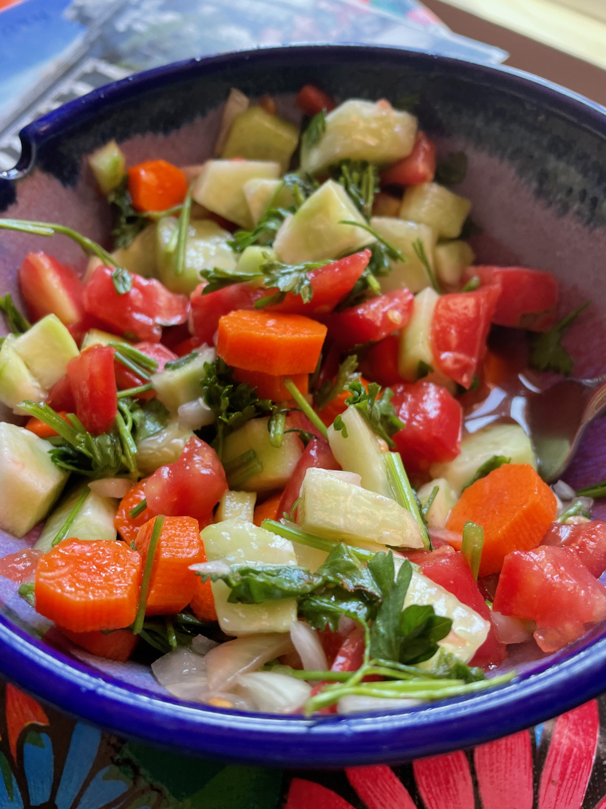

Israeli Salad

Fresh, clean veggies to offset the potatoes
Ingredients
- As many persian cucumbers you can get your hands on
- Salt, preferably kosher. Duh
- Red onion
- As many tomatoes as can get your hands on, preferably with taste
- Freshly-ground black pepper
- Your best olive oil
- Parsley optional
Steps
- Wash veggies. Slice tomatoes and cucumbers into equal-size diced chunks. Ratio is up to you, but I prefer 50/50 tomato/cucumber.
- Dice a quarter red onion, or half if you're bold.
- Drizzle olive oil, salt and season mixture, add parsely if you like. Coat evenly with hands.
- Enjoy, preferably outside on a porch, high up overlooking a sunny, Mediterranean cityscape.